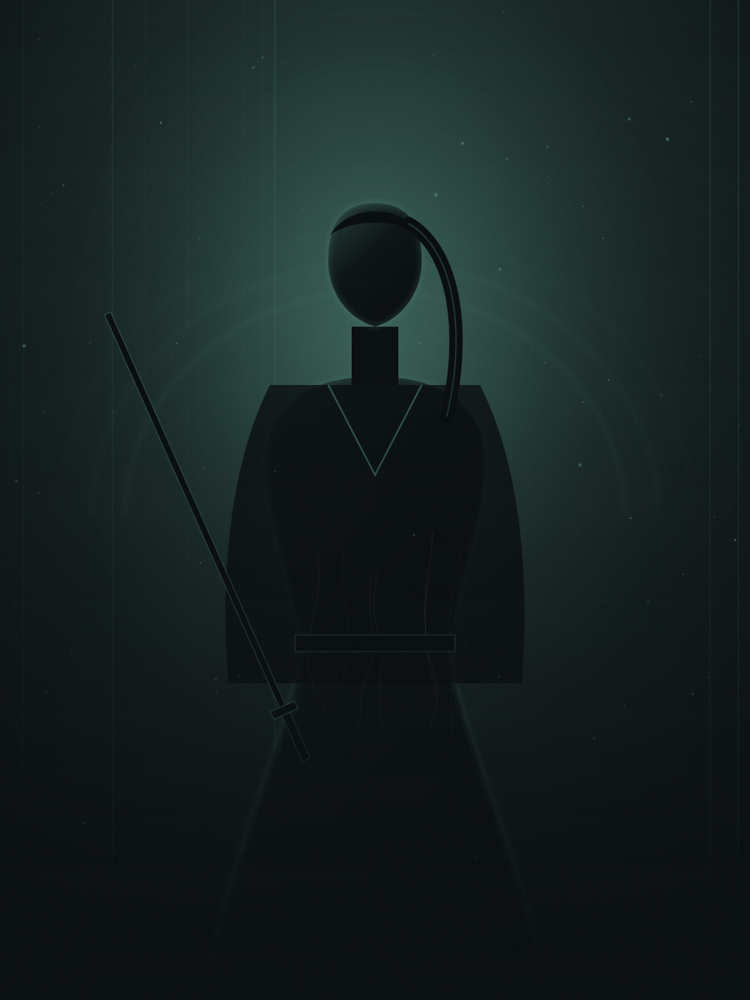
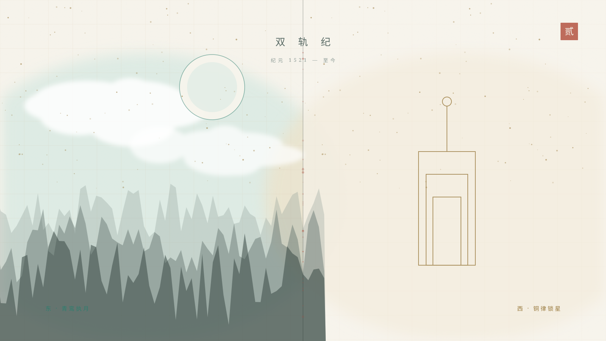
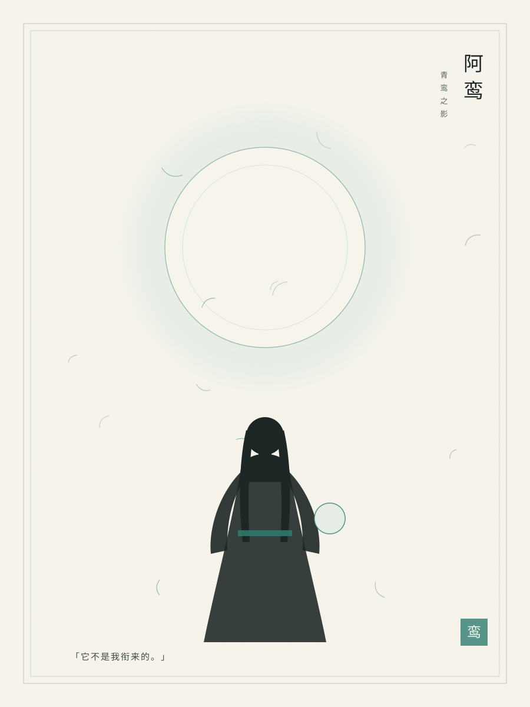
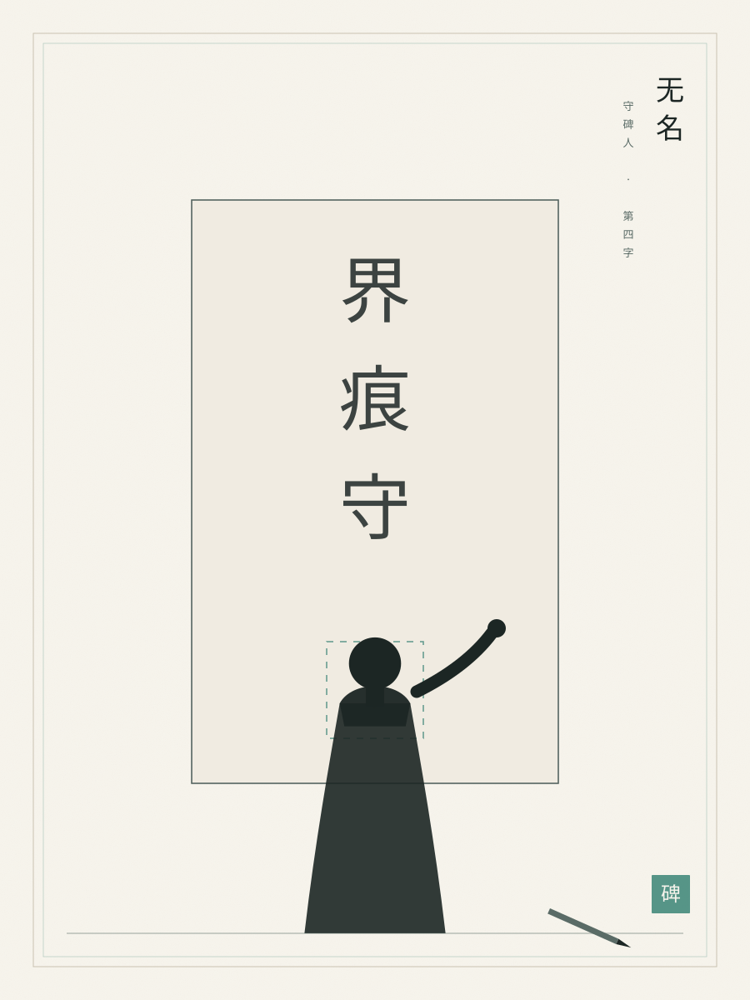
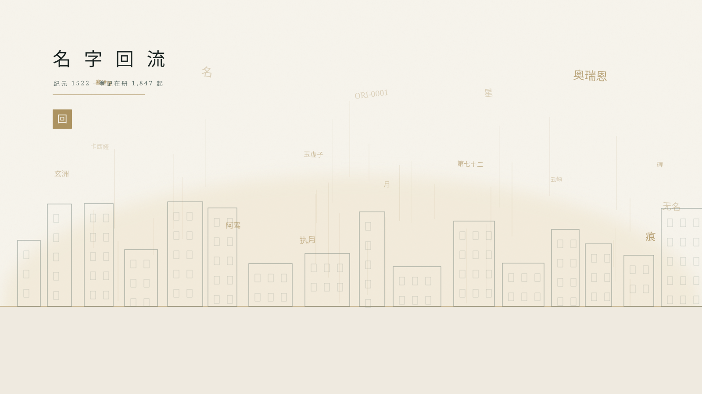
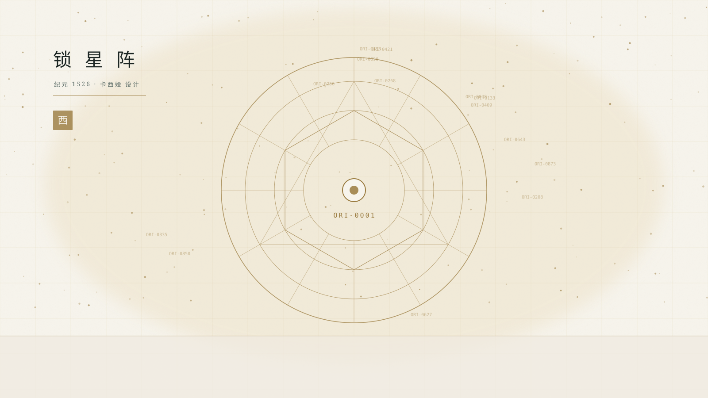
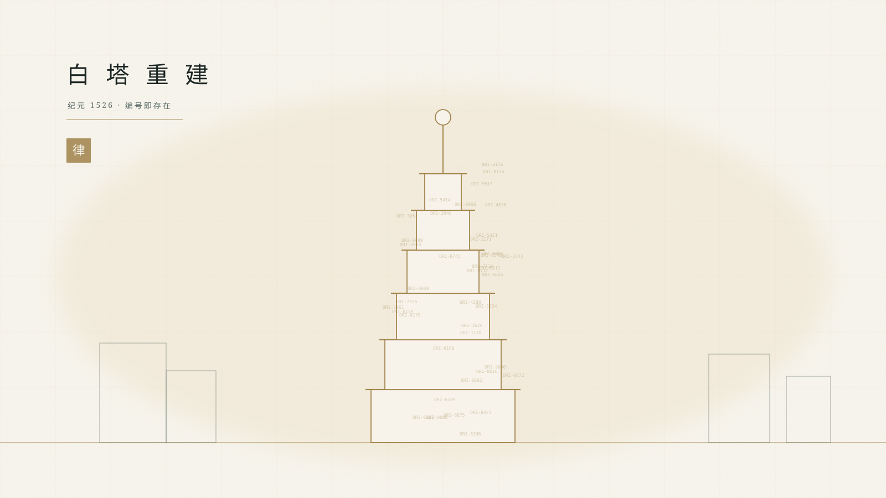
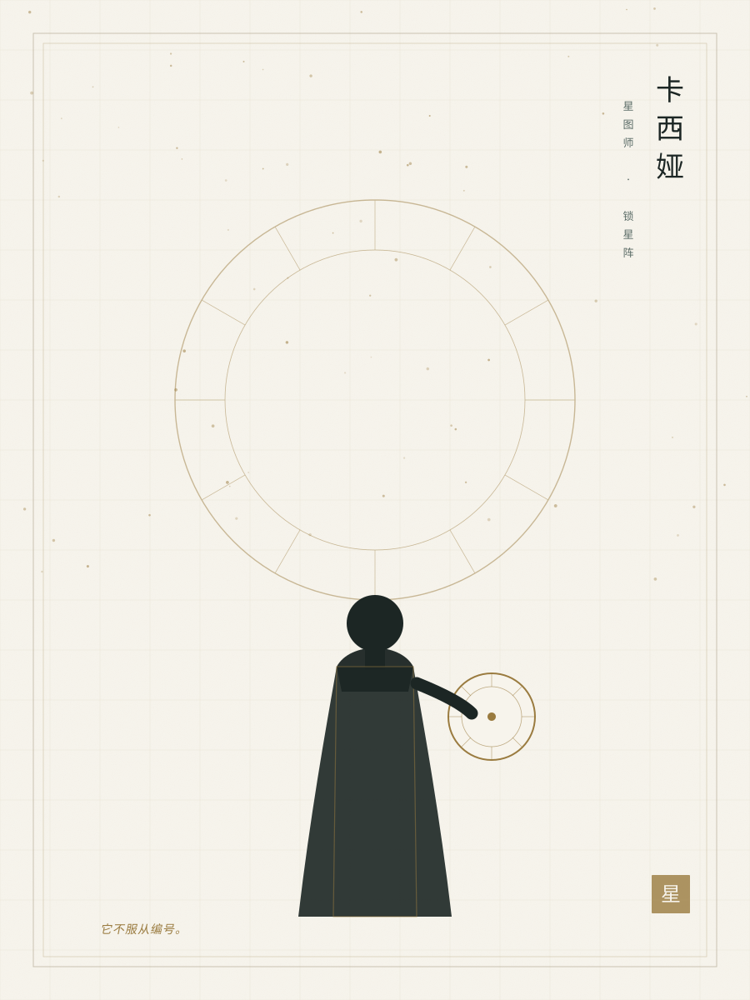
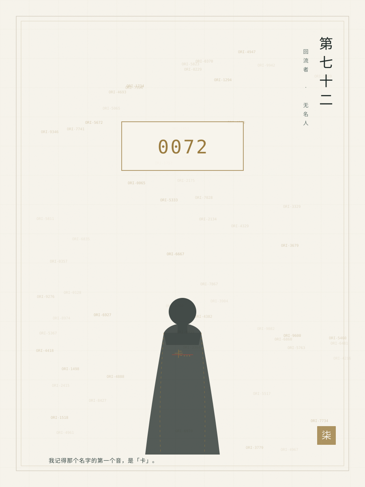
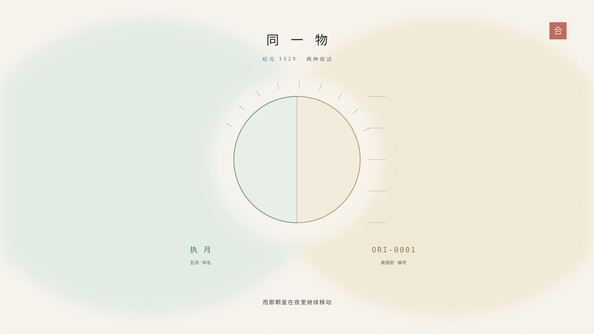

云岫
追月者之首 · 三十七岁
1.0 中那个在界痕边拔剑的少年。2.0 里剑已经锈了。他不再拔剑，只记录。《月行图》有四千三百二十一笔，最后一笔停在 1529 年冬。

Epoch II · Dual Track
界痕闭合之后
没有预兆，没有巨响。它只是停住了，像一条走到尽头的路。
纪元 1521 年春，界痕停止东移。
然后它开始向内收缩——从三百里宽，到一百里，到一线，到无。
两界第一次面对一个没有界痕的世界。
这才是真正的危机。界痕是两界唯一共同承认的事实。它消失之后，两界连敌人都没有了。玄洲的守碑人失去了要守的东西，奥瑞恩的律法师失去了要禁的东西。
而更麻烦的是：界痕是「未命名」的源头。源头断了，被抹去的东西开始回流。
1.0 问：命名能否替代存在。
2.0 问：当两界给同一物取了不同的名字，谁的名字算数。 —— 双轨纪 · 题记
从「可以走过去」，变成了「只能抬头看」。
界痕闭合那日，从最后一道痕里飞出第一只活物。
青羽，长尾，喙中衔着一枚发光的圆。它飞过玄洲上空，飞过九座碑，飞过玉虚子坐化的那块石头，然后把圆抛向天空。
圆升上去，没有落下来。
它成了月亮。
玄洲人从此相信：界痕没有消失，它只是从地上搬到了天上。
我们不知道它是什么，所以我们先记下来。
记下来，它就不会变成别的东西。 —— 云岫 · 追月者结社立誓
纪元 1524，云岫创立追月者结社。他们不修炼，不结阵，只做一件事：沿着青鸾飞过的路线行走，记录月相。每一夜，每一地，每一笔。
纪元 1529，玄洲人被迫给月亮取名。
这是玄洲第一次命名。在此之前，玄洲人不给天象取名——天象不需要名字，它自己就在那里。
但月亮开始移动了。它每晚出现在不同的位置，玄洲人必须说「今晚的月在哪」，才能互相指认。指认需要名字。
他们叫它「执月」。
那一刻，玄洲的本体论塌了一角。因为一旦命名，就有了「不是这个名字的东西」。而在此之前，玄洲的世界里没有「不是」。

追月者之首 · 三十七岁
1.0 中那个在界痕边拔剑的少年。2.0 里剑已经锈了。他不再拔剑，只记录。《月行图》有四千三百二十一笔，最后一笔停在 1529 年冬。

青鸾之影 · 月圆时出现
她不说话，只在月圆时出现。追月者相信她是青鸾的化身，但她自己从不承认。纪元 1531，她第一次开口，说的是：「它不是我衔来的。」

守碑人 · 第四字空着
九座碑上，前三个字已经填满，第四个字始终空着。他拒绝填。他说：填了，碑就成了名字；不填，碑还是碑。
界痕是「未命名」的源头。源头断了，被抹去的名字开始回流。
界痕闭合后第三个月，奥瑞恩旧城区出现了第一批被除名者。
他们从地下、从墙缝、从旧档案的空白处回来。没有身体，只有名字——一个名字浮在半空，然后附着到最近的活物身上。
奥瑞恩的世界建立在编号上。每个人有一个编号，每颗星有一个编号，每一条律法有一个编号。编号是帝国存在的证明。
名字回流意味着编号失效。编号失效意味着帝国不存在。

既然名字会回流，那就把名字的容器锁住。
天上的星是最大的容器。 —— 卡西娅 · 锁星阵设计说明
纪元 1526，星图师卡西娅设计锁星阵。阵成之日，奥瑞恩的夜空被划成网格。每一格一个编号，每一颗星一个位置。

纪元 1529，锁星阵锁住第一颗星。
那颗星在东方的低空，每晚移动。卡西娅把它编为 ORI-0001。
她不知道，同一时刻，海的另一边，有人给同一颗星取了另一个名字。


星图师 · 锁星阵设计者
她设计了锁星阵，然后发现锁住的星在夜里会移动。她没有上报。她在星图边缘写了一行小字：它不服从编号。

记名者 · 第十七面墙
帝国统帅。界痕闭合后他退役，走遍帝国，把被除名者的名字重新写回墙上。他写满了十七面墙，然后开始写第十八面。

回流者 · 档案编号 0072
一个没有名字的人。他是回流者之一，但他坚持自己有过名字。他说：我记得那个名字的第一个音，是「卡」。
两条线从不交叉，只在 1529 并置。
东 · 玄洲
执月
我们给了它名字，它从此属于我们。
后果：世界出现了「不是」。
西 · 奥瑞恩
ORI-0001
我们给了它编号，它从此不能离开。
后果：编号出现了「例外」。

而那颗星在夜里继续移动。 —— 双轨纪 · 至今